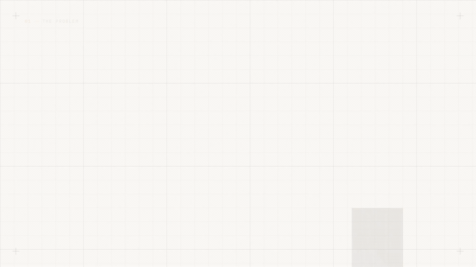

01Open source · Rust


An instant-payment foundation, built in the open.
raio borrows the best ideas from Brazil's Pix — alias-based pay-to-key, 24/7 instant transfer, the "copia e cola" BR Code — and packages them as a correct, federatable foundation. It is not a bank. It ships the root-of-trust types and the trait seams; the community builds the rails.
